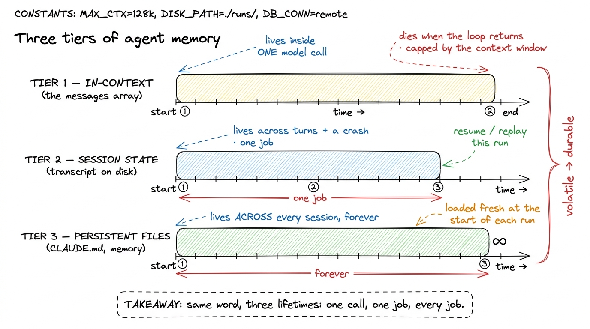
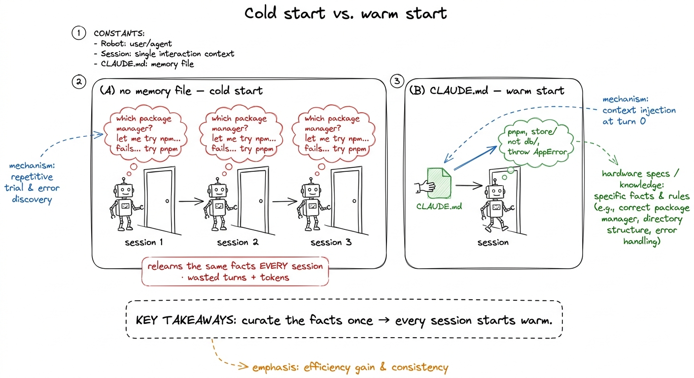
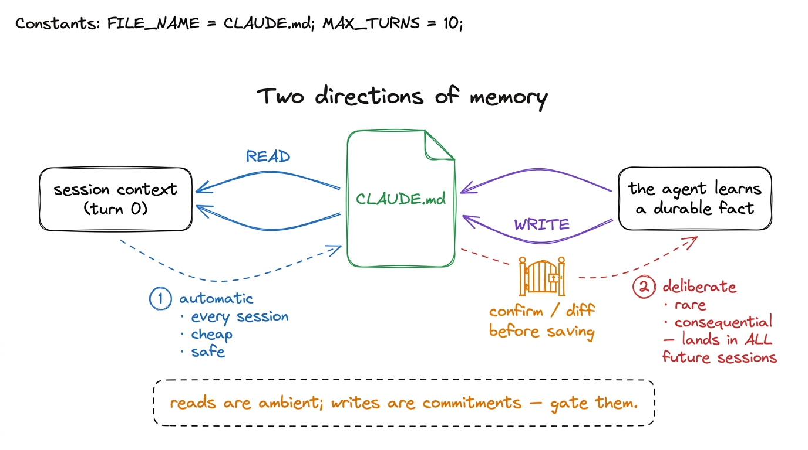
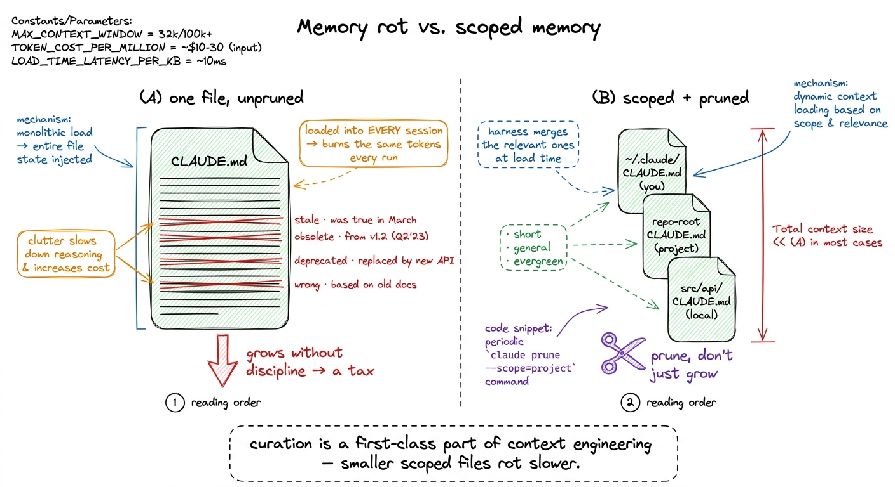

Memory systems & the CLAUDE.md pattern
Here is a fact about the bare loop we built that quietly limits everything: the moment run_agent returns, the agent forgets. The messages array — which was the agent's whole mind while the loop ran — goes out of scope, gets garbage-collected, and is gone. Start it again tomorrow on the same codebase and it walks in a stranger. It rediscovers that you use pnpm not npm, that the tests live under tests/ not test/, that the db module is deprecated and everyone uses store now — every single session, from zero, by trial and error, spending tokens and your patience relearning things it already learned yesterday.
Real agents don't do that, and the reason is a small idea with a big payoff: memory that outlives the loop. Claude Code opens a fresh session already knowing your conventions. pi does too. That knowledge didn't come from the model's weights and it didn't survive in the message array — it came from a file the harness reads on the way in. This chapter is about that file, and about the three tiers of memory it completes.
Three tiers, three lifetimes
The word "memory" is doing too much work when we use it for one thing. In a real harness there are three distinct kinds, and they differ not in what they store but in how long they live. Get the three straight and the whole design falls out naturally.

figure rendering · The three tiers of memory differ by lifetime: in-context lives one calTier 1 — in-context memory is the messages array itself. It is the fastest, richest memory the agent has — the model sees all of it, every token, on every call — and also the most fragile. It lives exactly as long as the loop, and it is bounded by the hardest wall in the system: the context window. When it fills, something has to give, which is the entire subject of compaction and summarization. Tier 1 is working memory: vivid, expensive, and gone when you close the laptop.
Tier 2 — session state is the running conversation written down somewhere durable — a transcript file, a row in SQLite, an append-only log — so that this one job can survive a crash, an interruption, or a Ctrl-C. It lets you resume a session, replay it step by step, or inspect what the agent did. It lives longer than a single call but it is still scoped to one task; when the task is done, the session closes. Tier 2 is the bridge to durable execution and checkpointing, and we treat the machinery there. It is episodic memory: the story of one run.
Tier 3 — persistent files is memory that belongs to the project, not to any run. It is a plain file on disk — most famously CLAUDE.md — that the harness reads at the start of every session and injects into the very first context. It is small, hand-curated, and durable across every job the agent will ever do here. Tier 3 is semantic memory: the stable facts about your world. It is what makes an agent walk in already knowing things, and it is the star of this chapter.
The three form a hierarchy of trust and cost. In-context is instant but volatile; session state is durable but narrow; persistent files are the slowest-changing and the most valuable, because a good fact written there pays off on every future run.1 This maps almost exactly onto the human distinction between working memory, episodic memory, and semantic memory. The analogy isn't decoration — it's a design compass. When you're unsure where a piece of information belongs, ask which human memory it resembles, and you'll usually put it in the right tier.
The CLAUDE.md pattern
Here is the whole pattern in one sentence: keep a durable file of project facts, and load it into the model's context at the top of every session. That's it. Everything else is refinement.
Concretely, CLAUDE.md is a Markdown file in your repo root that reads like a note you'd leave a new teammate on their first day — the things that aren't obvious from the code but that you'd be annoyed to explain twice.
# Project: acme-api
## Commands
- Install: `pnpm install` (NOT npm — the lockfile is pnpm)
- Test: `pnpm test` (vitest; a single file: `pnpm test path/to/x.test.ts`)
- Lint: `pnpm lint --fix` before every commit
## Conventions
- All DB access goes through `src/store/`. The old `src/db/` is deprecated — do not import it.
- Errors: throw `AppError`, never a bare `Error`. See `src/errors.ts`.
- We use British spelling in user-facing strings ("colour", "behaviour").
## Gotchas
- The dev server needs `.env.local` (copy from `.env.example`).
- `pnpm build` is slow (~90s); prefer `pnpm typecheck` while iterating.Now watch what the harness does with it. Loading it is not clever — it is one file read, prepended to the conversation before the user's first message ever appears.
import pathlib
def load_project_memory(root="."):
"""Read the durable project facts, if any. Returns '' when absent."""
f = pathlib.Path(root) / "CLAUDE.md"
return f.read_text() if f.exists() else ""
def start_session(user_request, root="."):
memory = load_project_memory(root)
messages = []
if memory:
messages.append({
"role": "user",
"content": f"<project_memory source=\"CLAUDE.md\">\n{memory}\n</project_memory>",
})
messages.append({"role": "user", "content": user_request})
return run_agent(messages) # the same loop from the last chapterThat is the entire mechanism. A dozen lines. But feel what it buys you: the agent's first call already contains your conventions, so it never has to discover them. It won't reach for npm, won't import the deprecated db module, won't spell "color" the American way. You paid a few hundred tokens once, at the top of the session, and bought correct behaviour for the whole run.2 The tag wrapper matters more than it looks. Fencing the file in <project_memory> tells the model this is durable reference material, not a user instruction for right now — the same reason we later fence tool results and compaction summaries. Unlabelled text bleeds into whatever the model is currently doing; labelled text stays in its lane.

figure rendering · Without a memory file every session cold-starts and rediscovers the saReading memory vs. writing memory
So far the agent only reads memory. That is the ninety-percent case and, honestly, where most of the value is: a well-tended CLAUDE.md that a human wrote and the harness loads. But the interesting frontier is the other direction — the agent writing to its own persistent memory.
The two directions are genuinely different operations, and conflating them is where memory systems go wrong. Reading happens automatically, once, at session start, and is cheap and safe. Writing is deliberate, rare, and consequential — because whatever the agent writes to CLAUDE.md will be loaded into every future session's context, forever, until someone removes it. A bad fact read once is a bad turn; a bad fact written is a bad turn repeated on every run until you notice. That asymmetry is the whole reason to treat writes with care.

figure rendering · Reading memory is automatic and cheap; writing memory is a deliberateWhen should the agent write? The honest answer from how real harnesses behave: only when it learns a durable, project-level fact that a human would want remembered. Claude Code exposes exactly this — start a line with # and the content gets routed into a memory file, and the /memory command opens those files for editing. The trigger is a correction that generalizes: you tell the agent "no, we deploy with make ship, not make deploy," and rather than just fixing this run, the well-designed agent offers to write that fact down so the next session starts already knowing it. The test is simple — would this fact be true next week, on a different task? If yes, it's Tier 3. If it's only true for the job in front of you, it belongs in Tier 1 or 2 and must never pollute the durable file.
Mechanically, giving the agent this power is just another tool — the same tool machinery from tool schemas as contracts, pointed at the memory file.
MEMORY_FILE = "CLAUDE.md"
REMEMBER_TOOL = {
"name": "remember",
"description": (
"Append a DURABLE, project-level fact to CLAUDE.md so future sessions "
"start knowing it. Use ONLY for facts true across tasks (conventions, "
"commands, gotchas) — never for details specific to the current task."
),
"input_schema": {
"type": "object",
"properties": {"fact": {"type": "string"}},
"required": ["fact"],
},
}
def remember(fact, root="."):
path = pathlib.Path(root) / MEMORY_FILE
# In a real harness this goes through the same permission gate as any write.
with path.open("a") as f:
f.write(f"\n- {fact.strip()}\n")
return "saved to CLAUDE.md"Notice two deliberate choices. First, the description does more teaching than describing — it spends its words drawing the Tier-1-vs-Tier-3 line for the model, because the model is the one deciding when to call it. Second, the comment flags what the toy omits: a self-writing memory tool is a file write, and it must pass through the same permission gate as any other write to your repo. An agent that can silently edit the file that shapes all its future behaviour is a footgun; an agent that proposes the edit and shows you the diff is a colleague.
Keeping memory from rotting
There is a failure mode that only appears once memory works, and it is worth naming so you design against it from the start: memory rot. Because Tier 3 is loaded into every session, it competes for the same scarce context budget as the actual task. A CLAUDE.md that grows without discipline — a fact appended every time the agent stumbles — slowly turns from an asset into a tax: it burns tokens on every run, and worse, a stale fact ("the API lives at v1/") that was true in March silently poisons every session in June.3 This is why the more mature pattern is not one giant file but scoped memory: a repo-root CLAUDE.md for project-wide facts, per-directory files for local conventions, and a user-level ~/.claude/CLAUDE.md for your personal preferences across all projects. The harness merges the relevant ones at load time. Smaller, scoped files rot more slowly and are far easier to keep true.

figure rendering · Memory rot: one unpruned file taxes every session and hides stale factSo the discipline that comes with memory is curation, and it is a first-class part of context engineering, not an afterthought. Good facts are short, general, and evergreen. The file is pruned, not just grown. And the strongest signal that memory is healthy is boring: the agent stops rediscovering things, stops re-asking, and simply starts each session already competent — which is exactly the feeling that separates a real coding agent from a clever autocomplete.
What memory buys, and what's still missing
With three tiers in place your harness has crossed a real line. Tier 1 gives it a mind for the duration of a task; Tier 2 lets that task survive a crash; and Tier 3 — the CLAUDE.md pattern — lets knowledge survive across every task, so the agent compounds what it learns about your project instead of starting from zero each morning. That compounding is most of what makes a long-lived agent feel like it's getting to know your codebase.
What memory does not solve is the wall it lives next to. Tier 3 loads durable facts into the context window, but the context window is still finite, and a long session will fill it no matter how tidy your memory file is. Loading the right things at the start is only half of context engineering; deciding what to drop when the array overflows mid-run is the other half. That is the next problem we take head-on: compaction and summarization — how a harness keeps a two-hundred-turn conversation alive inside a window that only holds a few dozen.